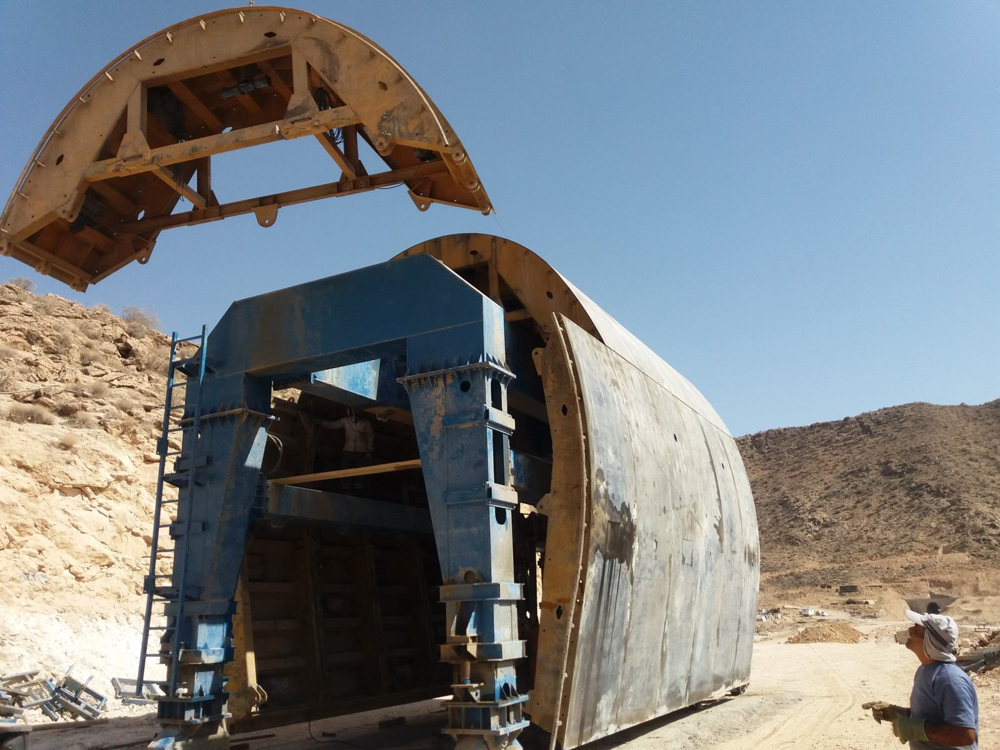
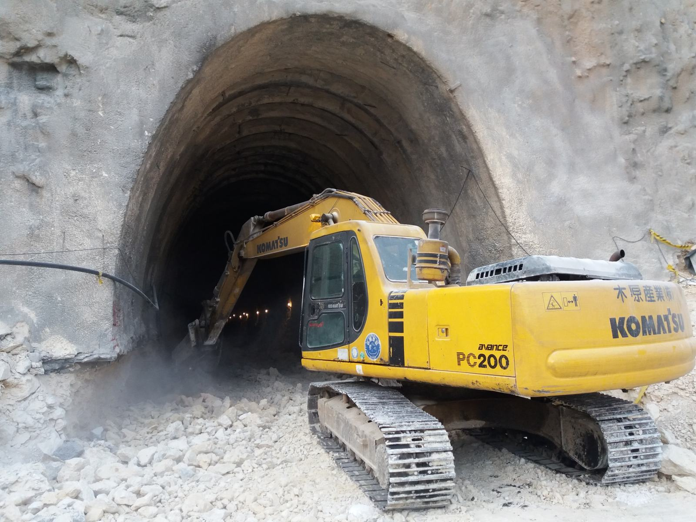
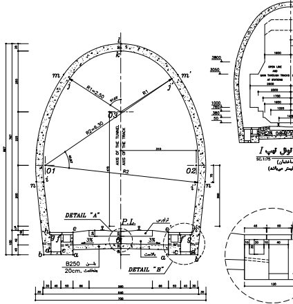
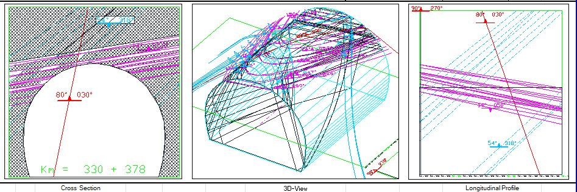

Tunnelbau
Tunnel- und Baustellenpraxis
Bilder und Eindrücke aus tunnelbezogenen Projekten, Baustellenumgebungen, Maschinen, Ausführungsschritten und technischer Praxis vor Ort.
Diese Galerie zeigt Einblicke in meine praktische Erfahrung im tunnelbezogenen Projektumfeld. Dazu gehören Baustellenbegehungen, Unterstützung der Bauabläufe unter Tage, technische Dokumentation sowie die Beobachtung und Auswertung von Ausführungsschritten im Tunnelbau.
Aus meiner Tätigkeit im Bereich Tunnelbau und Felsmechanik bringe ich Erfahrung in Kartierung, Monitoring, Baustellenkoordination und der Zusammenarbeit zwischen technischem Büro und Baustellenbetrieb mit. Der Schwerpunkt liegt dabei auf der Verbindung von technischer Genauigkeit und praktischer Umsetzbarkeit vor Ort.







